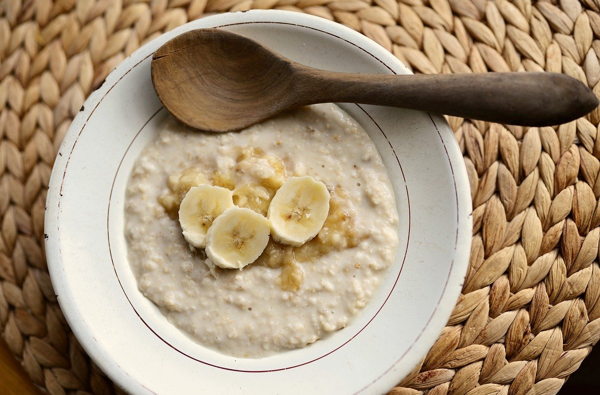

Porridge

Description
Creamy porridge with chia seeds made with oat milk on the hob.
Suitable for vegans.
Ingredients
- Porridge oats
- Oat milk
- Chia seeds
- Walnuts
- Bananas
- Cinnamon
- Salt for seasoning
Steps
- Soak oats and a bit of salt in water for half an hour
- Add milk and put on gentle heat
- Mix in chia seeds when oats are early at desired consistency
- Stir in cinnamon
- Serve and add banana and walnuts on top